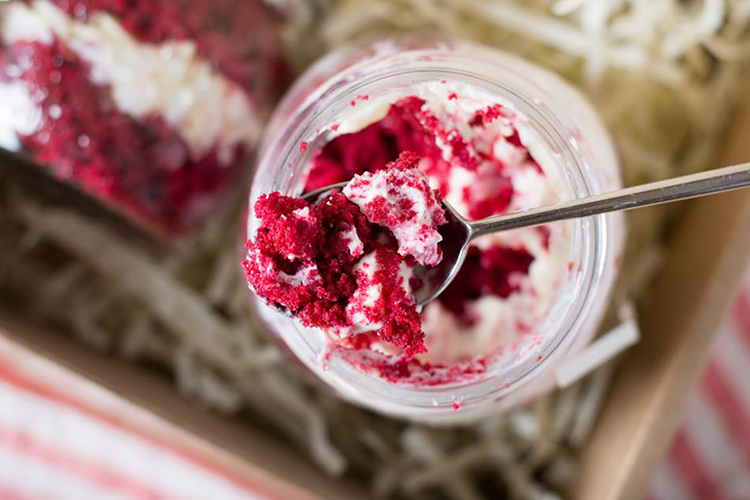

O que são Bolos de Pote?
Os bolos de pote são uma tendência deliciosa e prática no mundo da confeitaria. Fáceis de preparar, transportar e vender, eles combinam sabor e praticidade em um único produto.
De receitas clássicas a criações inovadoras, os bolos de pote conquistam o paladar de todos e são perfeitos para qualquer ocasião.

Ganhe Dinheiro com Bolos de Pote
- Venda em escolas e universidades para estudantes e professores;
- Ofereça seus produtos em empresas para lanches corporativos;
- Cadastre sua loja em empresas de delivery;
- Crie combos personalizados para festas e eventos;
- Divulgue seus bolos de pote nas redes sociais para atrair mais clientes.